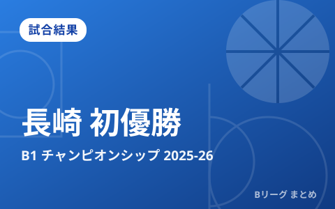

長崎ヴェルカが初の年間王者に B1チャンピオンシップ2025-26ファイナルで琉球を撃破

B.LEAGUE 2025-26シーズンのチャンピオンシップ（CS）ファイナルが5月26日に横浜アリーナで行われ、長崎ヴェルカが琉球ゴールデンキングスを72-64で破り、クラブ史上初の年間チャンピオンに輝きました。守り合いを制した長崎が、悲願のタイトルを掴んだ一戦を振り返ります。
ファイナルの結果
ファイナルはロースコアの接戦となりました。両チームともディフェンスから入り、お互いに簡単には得点を許さない緊張感の高い展開に。最後は長崎が要所でリードを守り切り、72-64で勝利。レギュラーシーズンから積み上げてきた堅守速攻のスタイルを、最も大事な舞台でやり切った形となりました。
| 項目 | 内容 |
|---|---|
| 大会 | りそなグループ B.LEAGUE 2025-26 チャンピオンシップ ファイナル |
| 開催日 | 2026年5月26日 |
| 会場 | 横浜アリーナ |
| 結果 | 長崎ヴェルカ 72-64 琉球ゴールデンキングス |
MVPとファイナル賞
チャンピオンシップ全体のMVPには、長崎のイ・ヒョンジュンが選出されました。ポストシーズンを通して攻守にチームを牽引した働きが評価された形です。また、ファイナルでとくに輝いた選手に贈られる「ファイナル賞」には、日本代表でもおなじみの馬場雄大が選ばれました。大舞台での経験豊富なベテランが、優勝の立役者となりました。
長崎ヴェルカ躍進の背景
長崎は比較的新しいクラブながら、積極的な強化と明確なチーム作りで一気にトップへ駆け上がりました。守備を土台にしたチーム全体のハードワーク、そして馬場雄大ら経験ある選手と勢いのある若手の融合が、頂点までの原動力となりました。クラブにとって初のタイトルは、地域のファンにとっても大きな喜びとなっています。
チャンピオンシップの仕組み
B.LEAGUEのチャンピオンシップは、レギュラーシーズンの上位クラブが出場する“トーナメント形式”の最終決戦です。クォーターファイナル（準々決勝）、セミファイナル（準決勝）を勝ち上がったチームだけがファイナルに進めます。シーズンを通して安定した強さに加え、短期決戦での集中力が問われる、まさにバスケの醍醐味が詰まった舞台です。
来季・Bプレミアへ
2026-27シーズンからは、新たなトップカテゴリ「B.LEAGUE PREMIER（Bプレミア）」がスタートします。王者・長崎がこの勢いを新リーグでも続けられるか、そして琉球をはじめとする強豪がどう巻き返すかが、早くも注目されます。新リーグの開幕情報はこちらの記事でまとめています。
Q. 長崎ヴェルカはどんなクラブ？
A. 長崎県を本拠地とするバスケットボールクラブで、近年急成長を遂げ、2025-26シーズンに初の年間王者となりました。
出典：B.LEAGUE公式「りそなグループ B.LEAGUE 2025-26シーズン 年間チャンピオン決定のお知らせ」
https://www.bleague.jp/news_detail/id=613811